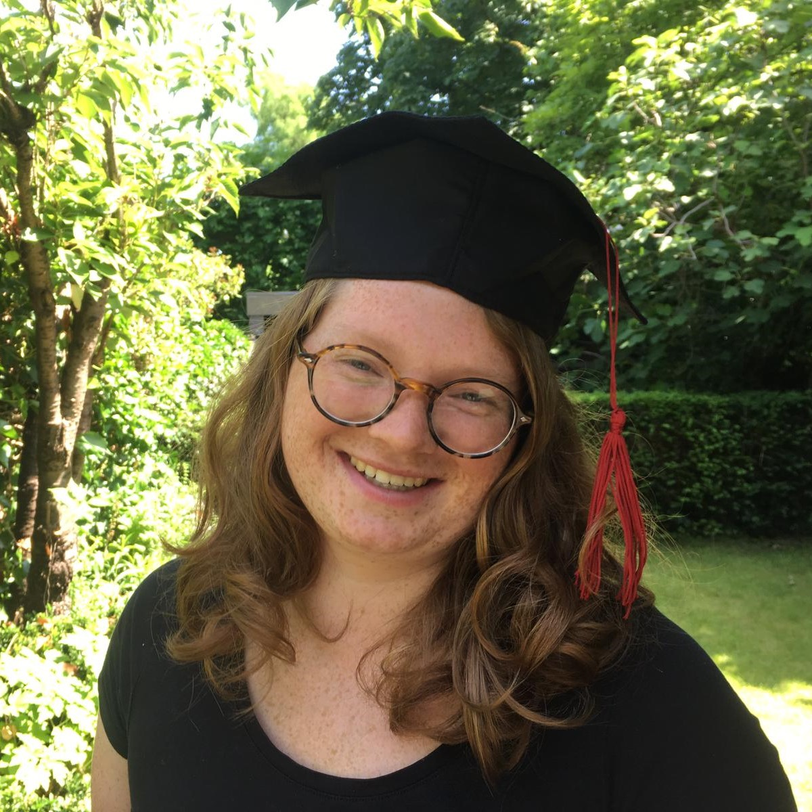

Tessel Haagen is a graduate student of the Master Artificial Intelligence at Utrecht Univeristy. She is currently working on her thesis at Info Support on interpretable AutoML for healthcare. Tessel is besides AI also enthusiastic about logic and art. She is proud to say her first publication is published in the journal Computational Linguistics in the Netherlands.
